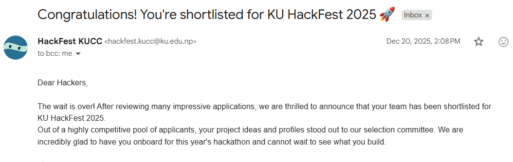
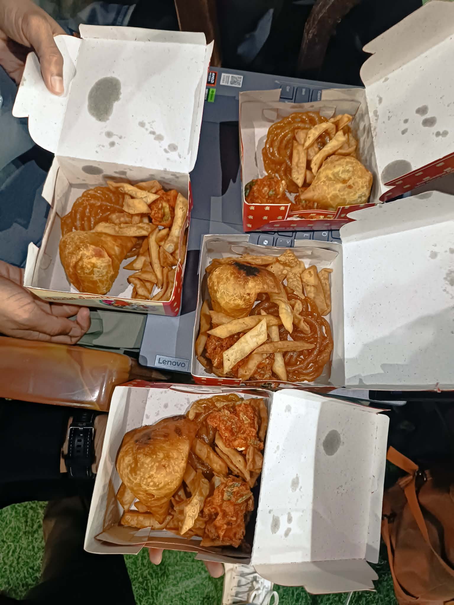
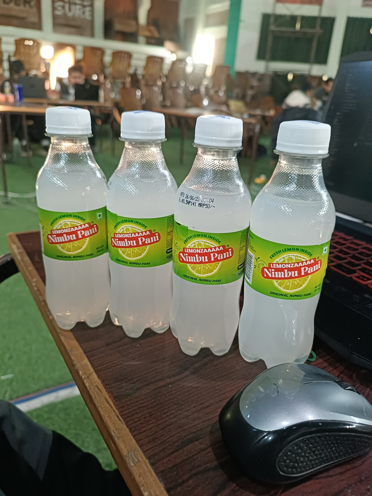
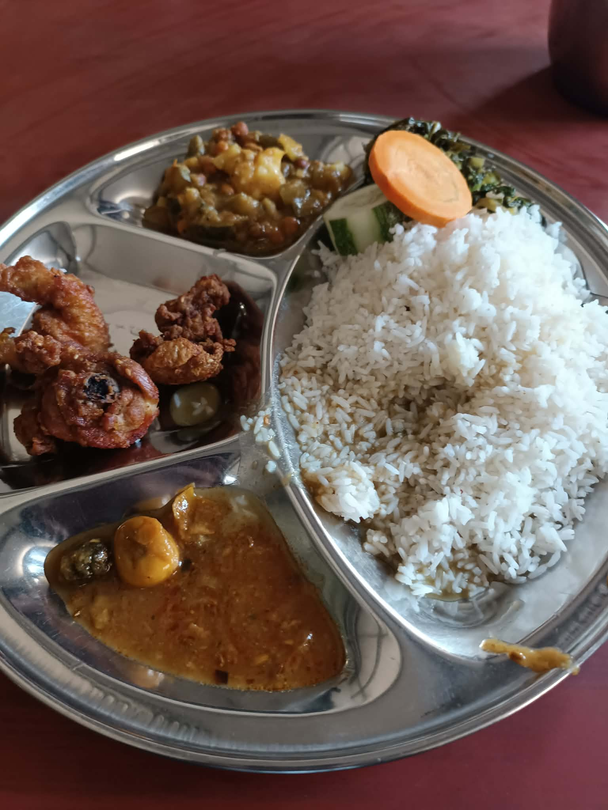
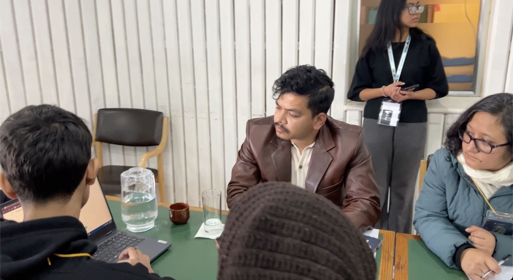

A few months back, I participated in KU Hackfest 2025. KU Hackfest, one of the biggest events under IT Meet, is an international-level 48-hour hackathon held every year at Kathmandu University, Dhulikhel. The 2025 edition was scheduled from 24–26 December 2025 and featured a massive prize pool of NPR 1,70,000.
It took some time to convince my friends to participate, mainly because we had to skip classes. I had to assure them that it would be worth it. Eventually, we filled out the registration form on their website. They used GitHub for login, which made me a bit nervous. I was worried that teams might be selected based on GitHub profiles. While I and one other teammate had decent GitHub profiles, the other two did not.
They also asked for our project idea and how we planned to complete it. That felt counterintuitive to me. I always thought hackathons started with a theme reveal and everyone began coding from scratch. However, the themes/categories were already released, and they were asking for ideas upfront. It almost felt like they were encouraging people to prepare their projects beforehand. While that would technically be disqualification, you can’t completely rule out the possibility.
Hopefully no one did that :P
Then came the good news, we were shortlisted. We were among the 40 selected teams, which was super exciting. Looking at other team names, I noticed ones like hog2.6 and Mini_Pekka. Clearly, there were some Clash Royale fans as well 🤣.
Just doing the math made me realize how massive the event was:
Managing accommodation, internet, food, mentors, volunteers, and everything else for so many people is no small task. Huge respect and special thanks to Utkrist Neupane, the Lead Organizer, for making the event possible.

The event started at 9:00 AM, and thankfully, the organizers had arranged two buses from Kalanki and Balaju to Kathmandu University. Otherwise, changing multiple buses early in the morning just to reach by 9 would have been a nightmare.
At the entry, we received our ID cards, and our tables were already labeled with team names. After a cup of milk tea, we set up our laptops and Wi-Fi and got started.
At first, we were completely confused about how to begin since we hadn’t prepared anything beforehand. So we did what most developers do, we asked GPT for an implementation plan. It quickly gave us a roadmap and even divided tasks among the four of us. From there, we started coding.
Our project was related to Vision AI, a field we had limited experience in. We spent time setting up the project. Design has always been a pain point for us, so we used Lovable and other AI tools to create the initial barebones UI. We mostly focused on the logic while AI handled much of the design.
We hadn’t eaten anything since the previous night, so we were starving by lunchtime. Lunch coupons were handed out around 1 PM, which felt quite late considering the event started at 9 and we had traveled early in the morning. No breakfast was provided.
Lunch was served at the cafeteria, and honestly, it was really good. Even though it was a college canteen, the food tasted almost like home-cooked food 🤣. I think it was veg… or maybe non-veg? Either way, each day had at least one non-veg meal, which was nice.
Later that day, we were given snacks,:samosa, pakoda, jerry, and drinks. It was refreshing, though since we had eaten lunch not long before, some of it felt wasted. Dinner was also good, but waiting in line with around 60 people wasn’t fun.
Around midnight, we were given sandwiches, but most participants were already full. From what I saw, hardly anyone ate them, and a lot went to waste.



(You’d think we went there just for food, but hey, it’s part of the experience 🤣)
We kept coding and learning new things. I experimented with agentic AI tools for development—basically vibe coding. Earlier, I used to code manually and ask GPT only when things broke. But vibe coding was insanely fast and perfect for a hackathon environment.
I also learned about a new editor called Antigravity, which was quite powerful. I still did some manual coding, but most of the design work was handled by AI.
The internet was a bit of a problem. The Wi-Fi was unreliable despite having 5–6 routers. Ethernet worked well, but we only had one cable per team, so most of the development happened on just two laptops basically peer coding lol.
The atmosphere was chill, but the cold at night was brutal. Thankfully, there were warm water dispensers and black coffee available. I didn’t drink much coffee, but it was there for those who needed it. I had brought a thin blanket, which at least helped keep our legs warm.
Some participants were coding intensely, while others seemed to be constantly checking their internet speed. Meanwhile, a few organizers and volunteers were playing games on the projector.
Late at night, we were informed about accommodation. We were given sleeping bags and told we could sleep on the stage or at the back of the hall. We chose the stage. Surprisingly, it was warmer than expected and definitely a unique experience.
The next night however, the chain of the sleeping bag slipped off slowly and since the strap was also loose I was shivering cold without knowing why I was feeling that cold. Should have taken better care cause the next morning i was feeling sore throat and light cold. That night we slept under our tables cause we worked till 2-3 am and slept.
Of course, not everything went smoothly. Late at night, the toilets inside the hall ran out of water, which meant no flushing or hand washing. People started using toilets on the lower floor, but those eventually ran out of water too.
To make things worse, one of our teammates had bowel issues and needed to use the toilet every 3–4 hours. Thankfully, there were other toilets nearby, like near the cafeteria and other halls. Oh and the other time, the canteen was different so we waited in the old canteen without knowing it had changed. We were near the last desks so maybe we didnt hear it. Later we realized that the information was sent via discord but we forgot to check discord. 😂
Also later that day we had an classwork assigned due that midnight so we rushed from dinner to complete the assignment. Some other participants were confused like what could we possibly be building that required all 4 of us to calculate with pen and paper. The later laughed when they learned that it was our assignments.😂
Organizing team members regularly checked in to see if we needed help. There were also mentors available, though most of the time we relied on ChatGPT. One of the mentors was Kritam Bhattarai, who had recently won the ICT Award 2025. 😮
The second day followed a similar routine mostly coding. Breakfast was chickpeas (chana), followed by lunch. Dinner and snacks that day were momo, which wasn’t bad at all.
That night, there were some fun games, like a word guessing game where we had to guess words with certain letter sequences. We didn’t make it very far ,it was harder than it looked.
There was also bingo, where each box had a condition (like having 20+ stickers on your laptop). Some people were really into it since it had separate rewards, but we skipped it to focus on our project.
We also prepared our presentation slides, expecting a stage presentation in front of judges and participants.
We made our final commits by 9 AM on the evaluation day. Initially, it seemed like evaluations would be individual, but the judges arrived late. The schedule changed, and multiple teams were evaluated simultaneously at different tables by different judges.
We were in the Open Category. Unfortunately, we didn’t know that no snacks or meals would be provided that day. We waited, only to realize everyone had already gone out to eat. We spent some time in the hall watching Stranger Things until a kind organizer/mentor gave us some cookies and candies.
Then we got a call that our turn was coming up much earlier than scheduled. We rushed to the evaluation hall.
We had even rehearsed a small act for a stage presentation, but since it was a desk evaluation, that effort went to waste. I’m not a great speaker, but I tried my best to present our project to the judges.
Our project itself was solid, but I think I messed up during the Q&A round and couldn’t give the best answers. My teammates were a bit disappointed, but it is what it is.

Yes, that’s our team presenting to the judges (we’re behind the image).
After the evaluation, we had some milk tea and waited for the results. Unfortunately, we didn’t win any awards. Still, it was an amazing learning experience.
Once the winners were announced, we had our final meal at nearby hotel and headed back home tired, cold, but happy.
Overall, KU Hackfest 2025 was an unforgettable experience, and I’d definitely recommend participating in any such hackathons if you ever get the chance.